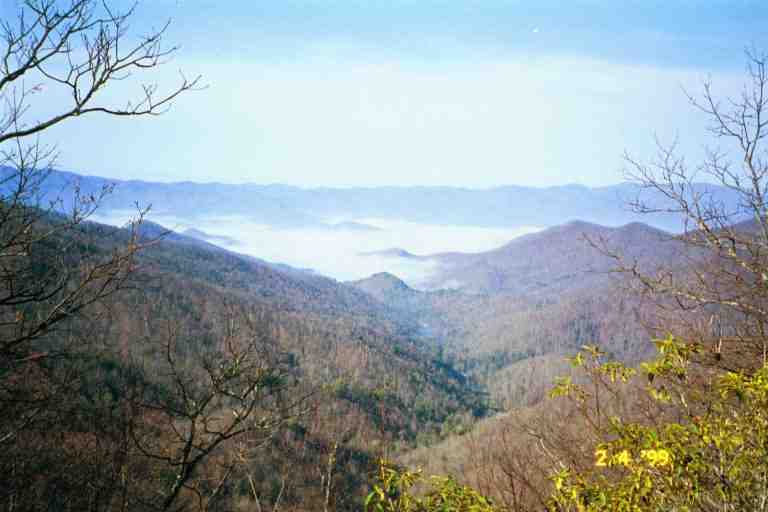

On the morning of March 31, we left NOC with our packs at their heaviest and tallest. We had our pack covers on as there was a cool mist that seemed to want to turn to rain. The trail started out on the edge of the hill overlooking the river and climbed immediately. It rose 700 feet in the first mile and a half then went into the woods and rose another 700 feet in the next mile and a half. For most of the morning we walked in the woods where it was dark, the air was moist and cool, and the vegetation and ground were wet. We crossed and climbed through many ravines. A few times the trail would go over rock fields covered in moss as it climbed to a new elevation while remaining in the deep woods.
As protection we wore our jackets, but in addition to getting wet on the outside, the effort of climbing and carrying our heavy packs was working up a sweat inside our jackets. At one point we heard MICHIGAN MAN yell greetings to us from down below as we climbed, but we could not see him. During this time we were protected from the wind by the mountain. After a few hours, as we were approaching the crest of a climb, we could hear the cold wind. We looked up and noticed that the trail was coming into the open and would be then following the ridge line and we would be exposed to the wind which was on the other side of the mountain. We stopped before reaching the top and had a good snack, then bundled up and headed on up.
We were right. As we hit the crest, the wind hit us, driving the cold rain into our face. The trail turned and went along the ridge line, climbing slowly. The area was mostly open and the wind and rain crossed the ridge line from our left. The trail wound its way in and out of the trees and wet grasses as we walked. We were very uncomfortable, bundled up from the wind, rain and cold and sweating profusely. After six miles we had climbed 3000 feet, and we were getting tired. We came to a campsite, but decided to go a mile further to Sassafras shelter, where we thought we would be more comfortable.
The shelter was a short distance off the trail in a little depression, out of the wind. As usual, it was already full and there were a number of tents set up. We walked up to the shelter and stood under the roof trying to get away from the rain. There were three people bundled up in their sleeping bags on the left, including CANEBREAK, and there were three others on the right sitting on their sleeping bags playing cards, two of whom were QUIK and NO TIME.. The way they were all sprawled, there was no room for us to get inside to sit and rest. We placed our packs on the side of the shelter that was getting less rain and I took out some GORP, which I shared with ELF and MICHIGAN MAN who just arrived and did not have quick access to their bags. This sure was a big change from the early days of the hike, when EAGLE would see us coming and yell out: "Everyone move over and make room in the shelter for MA and PA." I guess we were no longer that older couple, but just two other hikers.
As we stood and talked, NO TIME asked if I was OK. She said I did not look too good. I was getting a little cool now that I was not moving and was starting to shiver a little. I did not think there was much of a problem, but I was a little concerned about hypothermia so we decided to get some protection from the elements. We quickly set up our tent in the rain, about 20 feet in front of the shelter. Two young girls were doing likewise nearby, giggling as they did. They were PHIN and SONGBIRD. ELF and MICHIGAN MAN left to go camp back up closer to the trail.
Once our tent was up we placed our packs in the covered vestibules on each side. We got inside, leaving our damp boots in the vestibule, and removed our wet clothes. We put on our dry clothes, and got in our sleeping bags. We ate some GORP and snacks, as this would create energy and would help warm us. We lay there for some time and I just could not get warm. It is likely that the dampness was making me feel cold.
I hated to go back out, but I decided that a hot meal would be helpful. We put on our jackets, gathered our food bags and stove and headed for the shelter. We sat on the edge of the shelter and prepared supper after obtaining water from the stream right below the shelter. We met CHRISTOPHER ROBBINS and his dog TIGGER. We also met DEAD MAN HIKING who was given his name because he could only hike until June, at which time he had to get off the trail to get married. One of the men bundled up in his sleeping bag was not well. He was in pain and said he had a urinary tract infection. He was going to return to NOC in the morning and get off the trail.
One of the hikers decided to make a fire in the fire ring in front of the shelter. A number of us went scrounging around the area looking under trees and bushes for dry leaves, twigs and branches. I was very impressed by the skills of the firestarter who got the fire going in the rain (but I cannot remember his name). Not only was the fire warm, but it lifted everyone's spirits. A number of hikers were going to try and hike all the way to Fontana Dam tomorrow, a distance of 22 miles. It was too soon in our hike for us to do that kind of distance, especially considering that the days were still short and the weight we were carrying. When we finally went to bed, we felt buoyed by the food, the fire and the companionship.
The next morning we took off our dry clothes, placing them in plastic bags to keep them dry, and put our damp clothes back on. This is common practice in the backcountry. You must always have dry clothes in case of an emergency. Because we only had two sets of clothes, we always had to keep one set dry. The damp clothes were a little uncomfortable, but hiking would warm us up. We packed our wet tent and equipment and left.
We warmed up quickly, climbing 700 feet in the first mile and then we quickly dropped down 1400 feet. It had stopped raining and the walking was good, although there were lots of climbs and descents. We met SERPICO who had camped at a campsite last night. He had not closed his tent properly and had woken up in the middle of the night with a puddle in his tent. All his equipment was wet. He was also complaining about the pain in his legs and was wearing an elastic knee brace. Outfitters situated in the early portion of the trail did a brisk business in knee braces. Knee problems are common on the trail and are caused by steep descents carrying heavy packs. Hiking poles may help prevent that problem.
After a 9 mile day, we arrived at Brown Fork Gap shelter. We were early enough to get a spot in the shelter. SERPICO had his tent and clothes spread over lines and branches. We did likewise as did MICHIGAN MAN and other hikers who arrived later. I have yet to talk about toilet facilities but since we are at Brown Fork Gap shelter, it is a good place to start.
Outhouses are called privies and come in all styles, and shapes and with a number of different features. The only place that privies can be found on the trail is at shelters, and many shelters do not have any. I will describe some of them as we progress through the trip. In the first few weeks many of the privies did not have doors. There were no leaves on the trees and the privies often were placed facing across the mountains. The privy at Brown Fork Gap shelter had such a view, but like a few others it only had one wall. RAINDANCER had the following to say about this privy in her journal at www.trailplace.com. She was here the day before us.
The description that follows is for my friends back home and people who have never seen a privy. The particular accommodations at Brown Fork Gap shelter are an excellent example of what a privy should be. Imagine 4 10 ft. tree stumps placed 4 ft. apart in a perfect square with a slanted roof. There is a slotted fence that blocks the view from the shelter. There is a nice white toilet seat over a wooden box approximately 2 1/2 feet off the ground. I go there for the views. Today I went potty with the most spectacular view. Almost 360 degrees. I want to try to find wallpaper like the view today. Most splendid.
-------------------------A couple of miles before arriving at Brown Fork Gap shelter we came to the Stecoah Gap Road. Attached to a tree as we arrived at the road was a notice for the Fontana Motel. The Motel is a very small hiker friendly place, providing inexpensive rooms ($25), kitchen privileges, laundry facilities, and shuttles to restaurants and supermarkets for a small fee.. Nancy and Jeff Hoch have a wonderful reputation in the hiker community. I was familiar with the motel, having met Nancy Hoch two years before when she arranged a shuttle for us when we hiked in the Smokies.
The notice advised that if you called them when you got to Fontana Dam, 14 miles further up the trail, they would pick you up and bring you to their motel which is located 6 miles from the dam. As an alternative, the motel could be reached immediately by taking Stecoah Gap Road, a distance of 9 miles. Hikers who chose this alternative would have to hitch a ride to the motel but the motel would drive them back the following day so they could slackpack the section to Fontana Dam.
We had no intention of staying at a Motel in the Fontana Dam area and we had lots of supplies, so we were not interested; however we heard a story from BAGEL (a lady in her early forties) about her experience coming through this area a few days after us. She arrived at Stecoah Gap Road in the middle of a rain storm, soaking wet. The idea of a room for the night and slackpacking the next day sounded really appealing to her. A number of cars went by as she stood dripping wet at the side of the road. She then noticed one of the cars coming back. It pulled over and a lady offered her a ride.
The lady told BAGEL that she never picked up hitchhikers but that she looked so pathetic that she decided to take a chance. She drove her to the Fontana Motel which turned out to be full. Nancy Hoch informed her if she showed up the next morning she would slackpack her anyway and would have a room for her the following night. Nancy said there was a campground nearby where she could stay that night. The lady offered to drive her there. On the way, she offered to have BAGEL stay at her house. BAGEL had a wonderful evening, including a restaurant meal, laundry, hot shower and a bed for the night. In the morning she had a home cooked breakfast and a ride to the motel.
The best part of the Appalachian trail experience is the people: the hikers, the trail angels, the people who offer services for hikers, the friendly town people and the strangers that you meet. It restores your faith in people. During the course of our trip, we heard many such stories and met many such people.
----------------------------------------
The next day was a long 13 mile hike off the mountain to Fontana Dam shelter. Again there were lots of ups and downs till the final descent of 1700 feet. Near the end of the day we passed TOPACK and UNPACK in an area where the trail was hugging the side of the hill and was crossing a field of rocks. . UNPACK was walking very gingerly, unsure of her footing. Then as we climbed a rise, TOPACK got off the trail and went into the woods on the other side of the ridge line. UNPACK explained that they avoided shelters and liked to camp alone. For safety, they sought out spots on the other side of the ridge line so they would not be seen from the trail. They were stopping early so they could get an early start tomorrow to get into Fontana Village for their mail drop. Tomorrow was Saturday and the Post Office closed at noon.
We came out of the woods and met SERPICO sitting in the parking lot for the Fontana Marina. He had called a shuttle and was waiting to be brought to Fontana Village where he would probably be staying the night. The village is a little resort town with an expensive general store and resort priced accommodations. However this is the off-season and thru-hikers can sometimes share a $30 room with such features as an indoor pool and a spa. We continued on our way, heading back into the woods for the one mile climb to Fontana Dam.
Fontana Dam is the highest dam east of the Mississippi. The trail crosses the dam and heads into Great Smoky Mountains National Park. We would be staying at the Fontana Dam shelter tonight and crossing the dam tomorrow. The shelter has been christened the Fontana Hilton and now bears a sign with that name. It is located a short walk from one of the dam's parking lots, down a paved roadway. There are heated rest rooms nearby and free showers are available for hikers at the visitor center on the dam, about 0.3 miles away. The Hilton is a beautiful shelter that claims to sleep 20 but could likely fit 32 thru-hikers. There is an open corridor with a wooden floor (yeah! not dirt) running through the center with two sleeping levels on each side. As usual we took a bottom platform.
XENA and his father JED were here, having spent the previous night in the resort hotel in the village. Also present were DISHMAN (he was caught fiddling with the satellite dish at the cabins down below Neels Gap) and TENDER MOUTH (he couldn't stand anything hot in his mouth). . DISHMAN owned a company and I believe his friend TENDER MOUTH was one of his employees. These were two very nice young men who would soon be off the trail. I gave DISHMAN advice about using zinc oxide creams (diaper rash ointment) for the common problem of rashes in sensitive areas.
In one of the top corners was JC. He had been here a couple of days and would be here a few more as he was nursing a sore foot. JC was part of one of the big trail stories of the year. A few days after we left the Hilton, the Fontana Dam police invaded the shelter with a drug sniffing dog looking for drugs. They said that anyone who surrendered their drugs would be treated lightly. JC gave up a small quantity of pot and was given a ticket. The dog then proceeded to sniff through everyone's belongings, finding nothing but urinating on a number of items including the sleeping bags of an older couple. As can be imagined, the story was met with indignation up and down the trail. We met JC at least one more time (another funny story for later) and heard that he incredibly finished the trail at the end of July, walking the last few days with bloody feet.
We met a family of section hikers who were cutting their trip short and who offered us some of their food. Believe it or not, I accepted some of their snacks and dried meals. I cooked up some ramen and one of their rice packages for supper. We figured we would be able to do the entire 70 miles of the Smokies without stopping for supplies. The only road crossing in the park is at the 40 mile mark at Newfound gap from where we could get to Gatlinburg TN.
We took our time getting ready the next morning. We stopped at the dam's visitor center to call home and then crossed the dam heading for the Smokies.
Attached is a picture taken not far from Brown Fork Gap shelter and a picture of the Fontana Hilton that I copied from ZIPDRIVE's journal at www.trailjournals.com .(Behind the shelter we can see a portion of the lake created by the dam).
